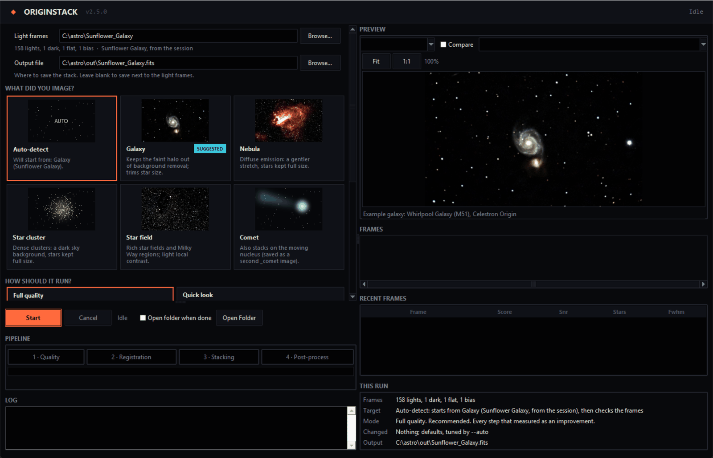

A night of frames in about a minute and a half
The Omega Nebula, 114 frames, on an 8-core desktop: 89 seconds from the raw files to a finished image, down from 132 in the previous version. The red block is the part that makes the picture look good; the rest is getting 114 frames to line up.
- Load, calibrate, score32.7 s
- Register9.4 s
- Align and stack24.6 s
- Finish the image15.6 s
- Disk and setup6.8 s
Load, calibrate, score
Each frame is corrected with your bias, dark and flat, turned from the sensor's colour mosaic into an image, and scored for sharpness and noise. Frames that are clearly bad are dropped.
Register
Frames are lined up to a fraction of a pixel, including the slow rotation of the field that an alt-az mount like the Origin produces.
Align and stack
The aligned frames are combined with outlier rejection, so satellite trails, hot pixels and cosmic rays drop out instead of averaging in.
Finish the image
Background gradients, colour and noise are handled, then the result is stretched to be viewed. The FITS file it saves stays linear, ready for any further work.
Frames are processed one at a time, so 500 frames need about the same memory as 50. Temporary files take roughly 100 MB of disk per frame while the run is going; the aligned frames are kept in memory instead when there is room, always leaving 30% of it free.
Watch it work, or skip the settings
Point the app at a folder of frames, say what you imaged (or let it work that out), and press Start. Every setting has a one-line explanation, and the defaults choose the rest for your target. These are real screens from stacking the Sunflower Galaxy frames used in the comparisons below. New to processing Celestron Origin images? The step-by-step guide starts from the session folder the telescope saves.




How it compares with Siril and DeepSkyStacker
Same frames, same bias, dark and flat, one machine, each tool on default-style settings. Three Celestron Origin sessions: the Omega Nebula (114 × 30 s), the Sunflower Galaxy (158 × 20 s) and the Sculptor Galaxy (532 × 10 s).
| Session | Stack only | OriginStack, finished image | Peak memory | Star width |
|---|---|---|---|---|
| Omega, 114 frames | 68 s / 86 s | 90 s | 10.6 / 6.5 GB | 4.40 / 4.56 px |
| Sunflower, 158 frames | 84 s / 106 s | 107 s | 12.8 / 7.8 GB | 3.52 / 3.60 px |
| Sculptor, 532 frames | 169 s / 195 s | 184 s | 9.2 / 11.2 GB | 2.69 / 3.01 px |
Star width on the same stars (smaller is sharper)
Omega
Sunflower
Sculptor
What the numbers say
Sharpness: sharper than Siril on all three. On the same stars OriginStack is 4% narrower on Omega (4.40 against 4.56 px), 1.5% narrower on Sunflower and 10% narrower on Sculptor. Two changes got it there: proper image coaddition, on by default, weights each scale of detail by how sharp, transparent and noisy each frame was (Zackay & Ofek, 2017); and a fix to a hot-pixel step that had been flattening the peak of most bright stars in every frame — on undersampled stars a star's centre looks exactly like a hot pixel to a test that only compares a pixel with its neighbours. It also used more frames: 114, 158 and 532, where Siril used 111, 157 and 525.
Noise: quieter than Siril once sharpness is matched. A sharper stack is noisier per pixel, so the fair comparison blurs each OriginStack channel until its stars are exactly as wide as Siril's. Then its noise, red/green/blue, is 0.81, 0.88, 0.89 times Siril's on Omega, 1.00, 0.75, 0.93 on Sunflower (its red stars were already as wide as Siril's) and 0.97, 0.92, 0.89 on Sculptor. Unmatched, per pixel, it is 0.92, 1.05, 1.06; 1.00, 0.84, 0.97; and 1.16, 1.08, 1.28 — the sharper the stars, the higher that number.
Speed: faster than Siril on all three. To the stack, run back to back on the same machine: 68 s against Siril's 86 s on Omega, 84 against 106 s on Sunflower and 169 against 195 s on Sculptor. OriginStack still does per-frame work Siril does not — quality scoring, white balance and star detection on every frame — and wins it back in registration and stacking. Both tools' times moved by up to a third between identical runs over the day (Siril alone took 55 to 86 s on Omega), so compare within a row. The finished image costs another 14 to 23 s.
Memory and disk. OriginStack runs one worker per physical core and keeps the aligned frames in memory when there is room: 9.2 GB on Sculptor against Siril's 11.2, and 10.6 and 12.8 GB on the two shorter sessions, where everything fit in memory (Siril 6.5 and 7.8). Temporary disk is lower on the two shorter sessions (11 and 15 GB against 17 and 23 GB) and higher on Sculptor (63 against 57 GB).
DeepSkyStacker took 14 min 8 s on Omega, produced stars softer than both others, and at its default settings left hot-pixel streaks and a few misregistered frames.
OriginStack's case is what comes after the stack: it finishes the image in the same run with no setup, explains the night with diagnostics, solves the sky position on your own computer, runs fully offline if you ask, and does the rest the other tools leave to you. On a plain stack it is now sharper than Siril on all three sessions, quieter once sharpness is matched, and faster on all three. All three sessions were re-measured on 2026-10-02 with this version; the DeepSkyStacker figure is from an earlier run and was not repeated. These numbers have been corrected before: an earlier version of this page overstated sharpness because of how stars were chosen for measurement, and another credited a noise improvement to cosmic-ray detection that was really smoothing. Three sessions from one camera are a small sample, and both tools were left at default-style settings. tools/bench_vs_siril.py repeats all of this on your own frames.
And with the telescope's own stack
Every Celestron Origin session folder also holds the telescope's own result, FinalStackedMaster.tiff. Four sessions, the same lights for all three: the Black Eye Galaxy (81 × 20 s), the Sunflower Galaxy (158 × 20 s), the Crab Nebula (133 frames) and the Hercules Cluster (56 frames). OriginStack at its defaults, Siril with the settings above.
| Session | vs Origin: star width | vs Origin: noise | vs Siril: star width | vs Siril: noise |
|---|---|---|---|---|
| Black Eye, 81 frames | 8.15 / 8.38 px | 1.00 / 1.04 / 1.06 | 8.21 / 8.26 px | 0.94 / 1.09 / 0.97 |
| Sunflower, 158 frames | 3.54 / 4.25 px | 0.96 / 0.93 / 0.95 | 3.50 / 3.58 px | 1.02 / 1.03 / 1.02 |
| Crab, 133 frames | 2.54 / 3.50 px | 1.00 / 0.92 / 0.95 | 2.54 / 2.77 px | 1.04 / 0.99 / 1.01 |
| Hercules, 56 frames | 5.67 / 5.98 px | 0.99 / 0.96 / 1.01 | 5.68 / 5.74 px | 1.00 / 1.04 / 1.01 |
Star width relative to OriginStack's, on the same stars (smaller is sharper)
Black Eye Galaxy
Sunflower Galaxy
Crab Nebula
Hercules Cluster
What the numbers say
Sharpness: the same order on every session. OriginStack, then Siril, then the Origin. The telescope's own stack is the softest of the three: its stars are 4% wider than OriginStack's on the Black Eye, 17% on the Sunflower, 27% on the Crab and 5% on the Hercules Cluster, and most of that is in blue. Siril sits close to OriginStack, 1 to 8% wider.
Noise: a tie. Measured at the scale of a star — the noise that decides how faint a star you can see — all three are within a few percent of each other in every channel. OriginStack's extra sharpness costs nothing in noise.
What the Origin does better out of the box: its saved image already has the sky gradients removed. OriginStack removes them in its finishing steps; Siril's stack here has none.
It found two faults in OriginStack. Putting the finished images side by side showed a speckled sky on small, faint targets and blue discs on saturated stars. Both are fixed, and the numbers above were measured again afterwards.

How it was measured: the Origin's TIFF is linear but sits on a large pedestal, so its brightest star cores clip; each stack was put on OriginStack's brightness scale with one gain per colour channel, measured where the image is linear, and clipped stars were left out. Noise ratios rest on that gain, so read them as plus or minus 5 to 10%. Four sessions from one telescope are a small sample. tools/bench_vs_origin.py repeats it on your own frames.
Made with it
All from raw Celestron Origin frames, stacked and processed by OriginStack, under measured Bortle 7-9 skies (heavy light pollution, backyard/rooftop, not a dark site) -- see the README for the per-image measurements and method.


Install it
Windows installer
Free stacking software for Windows 10 and 11. Download the setup file from the latest release and run it. It installs for your user only, adds a Start Menu entry and an uninstaller, and needs no Python.
Prefer the zip? Use Extract All first, then run OriginStack.exe from the extracted folder. Running it from inside the zip fails.
macOS app
Download the zip for your Mac from the latest release: macos-arm64 for Apple silicon (M1 and later, needs macOS 14 or later) or macos-x86_64 for an Intel Mac. Open the zip and drag OriginStack into Applications. It needs no Python.
The app is not signed by Apple yet, so macOS blocks the first launch. Control-click OriginStack and choose Open, then Open again; on macOS 15 and later, try to open it once, then choose Open Anyway under System Settings, Privacy & Security. Or clear the download flag in Terminal:
xattr -dr com.apple.quarantine /Applications/OriginStack.app
The Mac builds have had less real-world use than the Windows build.
Linux bundle
Download OriginStack-<version>-linux-x64.tar.gz from the latest release, extract it and run the installer. It installs for your user only, adds an application-menu entry, and needs no Python or root.
tar xzf OriginStack-*-linux-x64.tar.gz cd OriginStack-*-linux-x64 ./install.sh
It needs glibc 2.35 or newer (Ubuntu 22.04, Debian 12, Fedora 36 and later) and has had less real-world use than the Windows build. Run ./install.sh --uninstall to remove it.
From source
On Windows, Linux (tested) or macOS (not tested):
git clone https://github.com/hd152/originstack cd originstack pip install -r requirements.txt python desktop_app.py
The command line does the same job: python originstack.py -d lights/ -o stacked.fits. An optional Rust extension speeds up the heavy steps and falls back to plain NumPy without it.
What else it does
Calibration with bias, dark and flat frames, hot-pixel and satellite-trail removal, sigma-clipping and other outlier-rejecting stacking methods, optional drizzle, background and gradient removal, noise reduction and deconvolution, plate solving, colour calibration, photometry and a comet mode. If you are looking for a free alternative to DeepSkyStacker or Siril for Celestron Origin and other one-shot-colour astrophotography data, this is built for that.
What it reads
Celestron Origin raw files (the FITS frames in each session folder, with their info.json), and colour-camera frames as FITS, camera RAW (Canon, Nikon, Sony and others, needs rawpy), TIFF and XISF. SER video is supported for planetary work. Mix formats freely in one folder.
Want it fully offline? Pass --offline, or tick it in the app, and OriginStack makes no network requests at all.